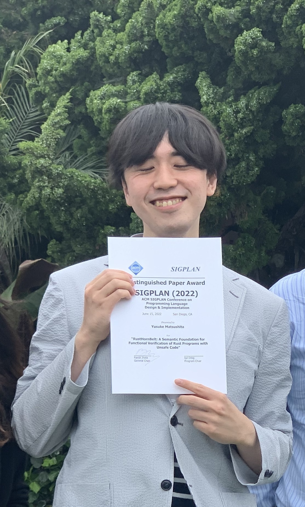

Yusuke MATSUSHITA (松下
祐介)

(Last updated: Mar 11, 2025)
I am a software scientist. I specialize in formal verification of
stateful programs, especially those written in Rust (e.g., my work RustHorn and RustHornBelt). I am also curious about many
other topics, including algorithms and natural language processing
(e.g., SoftMatcha).
From April 2025, I will be a Program-Specific Assistant Professor at
the Hakubi Center for
Advanced Research, Kyoto University. Until March 2025, I work as a
JSPS Fellow (PD) at the Computer
Software Group, Grad
School of Informatics, Kyoto University.
Google
Scholar, dblp,
ORCID
GitHub, Twitter, LinkedIn
Email: ysk.m24t@gmail.com
Curriculum Vitae (Last
updated: Feb 28, 2025)
Papers
- Hiroyuki Deguchi, Go Kamoda, Yusuke
Matsushita, Chihiro Taguchi, Kohei Suenaga, Masaki Waga and Sho
Yokoi.
SoftMatcha: A Soft and Fast Pattern Matcher for
Billion-Scale Corpus Searches.
ICLR
2025. Apr 24-28, 2025.
Webpage, OpenReview
- Takashi Nakayama, Yusuke Matsushita, Ken Sakayori, Ryosuke
Sato and Naoki Kobayashi.
Borrowable Fractional Ownership Types for Verification.
VMCAI
2024. Jan 15-16, 2024.
Paper: Springer
Talk at VMCAI
2024: YouTube
- Yusuke Matsushita, Xavier Denis,
Jacques-Henri Jourdan and Derek Dreyer.
RustHornBelt: A Semantic Foundation for Functional
Verification of Rust Programs with Unsafe Code.
ACM PLDI
2022. June 13-17, 2022.
Distinguished Paper Award!
Paper: ACM-DL, Authors’
Artifacts: Zenodo; Coq
mechanization, Benchmarks
Talk at PLDI 2022: Slides, YouTube
- Yusuke Matsushita, Takeshi Tsukada and
Naoki Kobayashi.
RustHorn: CHC-based Verification for Rust
Programs.
ACM
TOPLAS. Oct 31, 2021.
Extended version of the same-titled ESOP 2020 paper.
Paper: ACM-DL, Authors’
- Yusuke Matsushita, Takeshi Tsukada and Naoki
Kobayashi.
RustHorn: CHC-based Verification for Rust
Programs.
ESOP
2020. Apr 27-29, 2020.
Selected to TOPLAS Special Issue on ESOP 2020
Paper: Authors’, Springer, arXiv
Talk at ESOP
2020: Slides (Keynote), Video
Artifacts: Zenodo; GitHub Repo
Theses
- Yusuke Matsushita.
Non-Step-Indexed Separation Logic with Invariants and Rust-Style Borrows
(不変条件と Rust 流の借用を扱える非 Step-Indexed な分離論理).
Ph.D. dissertation. University of Tokyo. Supervised by Prof. Naoki
Kobayashi. Dec 6, 2023.
Paper: Author’s
Talk: Slides (Keynote)
- Yusuke Matsushita.
Extensible Functional-Correctness Verification of Rust Programs by the
Technique of Prophecy (預言の技術による Rust
プログラムの拡張可能な機能正当性検証).
Master’s thesis. University of Tokyo. Supervised by Prof. Naoki
Kobayashi. Feb 24, 2021.
Predecessor of the RustHornBelt paper.
Paper: Author’s
Talk: Slides (Keynote)
- Yusuke Matsushita.
CHC-based Program Verification Exploiting Ownership Types
(所有権型を利用した CHC ベースのプログラム検証).
Senior thesis. University of Tokyo. Supervised by Prof. Naoki Kobayashi.
Feb 28, 2019.
Predecessor of the RustHorn paper.
Paper: Author’s
Talk: Slides (Keynote)
Lectures
- Yusuke Matsushita. The Fun of Rust.
Lecture for the Course of CCE, Grad School of Informatics, Kyoto
University. Dec 20, 2024.
Slides (Keynote), Info
- Yusuke Matsushita. 分離論理 Iris の世界 (The World of
Separation Logic Iris).
Invited lecture at PPL Summer School
2024. Sept 9, 2024.
Slides (Keynote), YouTube
- Yusuke Matsushita and Takashi Nakayama. ソフトウェアの科学
〜バグのない世界を目指して〜 (Science of Software, Aspiring to a World
Free of Bugs).
Open Campus 2023, the Faculty of Science, the University of Tokyo. Aug
2, 2023.
Slides (Keynote), YouTube
Talks
- Yusuke Matsushita, Kengo Hirata and Ryo Wakizaka.
Concurrent Quantum Separation Logic for Fine-Grained Parallelism.
Talk at TPSA
2025. Jan 21, 2025. Extended
abstract, Slides (Powerpoint)
Talk at PLanQC
2025 (Presented by Ryo Wakizaka). Jan 25, 2025. Extended abstract, Slides (Powerpoint)
- Yusuke Matsushita.
Rust から広がるプログラム検証・テストの新展望 (New Perspectives on
Program Verification and Testing Spreading from Rust).
Invited talk at PRO-2024-1. Jun 14,
2024.
Slides (Keynote)
- Yusuke Matsushita, Xavier Denis, Jacques-Henri Jourdan and
Derek Dreyer.
RustHornBelt: A Semantic Foundation for
Functional Verification of Rust Programs with Unsafe Code. PLDI
2022.
Talk at PLDI 2022. June 17,
2022. Slides, YouTube
- Yusuke Matsushita, Takeshi Tsukada and Naoki
Kobayashi.
RustHorn: CHC-based Verification for Rust
Programs. ESOP 2020.
Talk at ESOP
2020. Mar 31, 2021 (delayed by one year due to the pandemic).
Slides (Keynote), Video
Invited talk at JSSST 2020. Sept 10, 2020.
Slides (Keynote), YouTube
Talk at PPL 2020. Mar
4, 2020. Slides (Keynote)
Posters
- Yusuke Matsushita, Yudai Tanabe, Taro Sekiyama and Atsushi
Igarashi.
Linear Haskell での Rust 流借用の純粋な実現 (Pure Realization of
Rust-Style Borrows in Linear Haskell).
PPL 2025. Mar 3-5,
2025. PDF (Keynote)
- Yusuke Matsushita, Takeshi Tsukada and Naoki
Kobayashi.
所有権型を利用した CHC ベースのプログラム検証 (CHC-based Program
Verification Exploiting Ownership Types).
PPL 2019. Mar 6,
2019. PDF (Keynote)
Articles
- Yusuke Matsushita. Non-Step-Indexed Separation Logic with
Invariants and Rust-Style Borrows.
2023 年度研究会推薦博士論文速報 (Bulletin of Ph.D. Dissertations in AY
2023 Recommended by SIGs), Information Processing Society of Japan. Aug
15, 2024.
HTML (Japanese)
- Yusuke Matsushita. ソフトウェアの世界を切り拓く (Breaking
Ground in the World of Software).
理学のススメ (An Encouragement of Science) No. 7 in the University of
Tokyo 理学部ニュース (News from Faculty of Science) Vol. 54, No. 1, May
2022.
Text: Author’s
(Japanese & English); PDF,
HTML
(Japanese)
Grants
- Apr 2025 – (Mar 2030)
The Hakubi Project, Kyoto University
Exploring a New Age of Software Development Springing from Rust (Rust
から広がる新時代のソフトウェア開発の探究)
- Apr 2024 – Mar 2027
JSPS (学振) Research Fellowship for Young Scientists PD
Foundations and Applications for Robust and High-Performance System
Software (堅牢で高性能なシステムソフトウェアのための基礎と応用)
KAKEN
Page
- Apr 2021 – Mar 2024
JSPS (学振) Research Fellowship for Young Scientists DC1
Theory and Application for Robust and High-Performance Systems
Programming Languages
(堅牢で高性能なシステムプログラミング言語のための理論と応用)
KAKEN
Page
Work
Teaching
- Aug 2024
Lecturer
of S15
Rust プログラム検証ゼミ (Rust Program Verification Seminar) at Security
Camp 2024 by IPA
- Blog articles “Rust で預言を使ったプログラム検証器を自作しよう
(Let’s develop a prophecy-based program verifier in Rust by yourself)”
by isan, a student of the seminar: #1, #2, #3
- Apr 2022 – Aug 2022, Apr 2019 – Aug 2019
Teaching assistant of “Functional and Logic Programming Experiments” at
Dept. of Information Science, School of Science, UTokyo
- Sept 2019 – Feb 2020
Teaching assistant of “Processor and Compiler Experiments” at Dept. of
Information Science, School of Science, UTokyo
- Mar 2018
Lecturer of “Purely Functional Data Structures” at JOI 2017 Spring
Training Camp
- Aug 2017
Tutor on “Purely Functional Data Structures” (Chris Okasaki) at JOI 2017
Summer Seminar
Service
- Jan 2025 – Mar 2025
Program committee member of PPL 2025
Internship
- Nov 2022 – Feb 2023
Software engineer internship for Google ChromeOS, at Google Tokyo
- Sept 2020 – Dec 2020, Feb 2021 – July 2021
Research internship (Online) at the RustBelt Team, MPI-SWS, supervised by Derek Dreyer
- Aug 2019 – Jan 2020
Frontend and backend web engineer at CADDi (building a manufacturing platform),
Tokyo, Japan
Interview
Article
- Mar 2017 – Mar 2019
Software engineer at Morishita Lab (studying
genome informatics), Dept. of Computational Biology and Medical
Sciences, Grad School of Frontier Sciences, UTokyo, Japan
Education
- Apr 2021 – Mar 2024
Ph.D. of Computer Science
Kobayashi
Lab, Dept. of Computer Science, Grad School of IST,
UTokyo
- Apr 2019 – Mar 2021
Master of Computer Science
Kobayashi
Lab, Dept. of Computer Science, Grad School of IST,
UTokyo
- Apr 2017 – Mar 2019
Bachelor of Science
Dept. of Information Science, School of Science,
UTokyo
- Apr 2015 – Mar 2017
Natural Sciences I, College of Arts and Sciences Junior Div., UTokyo
- Apr 2009 – Mar 2015
Nada Junior and Senior High
School
Experiences
Competitive Programming
Piano and Music
Debate